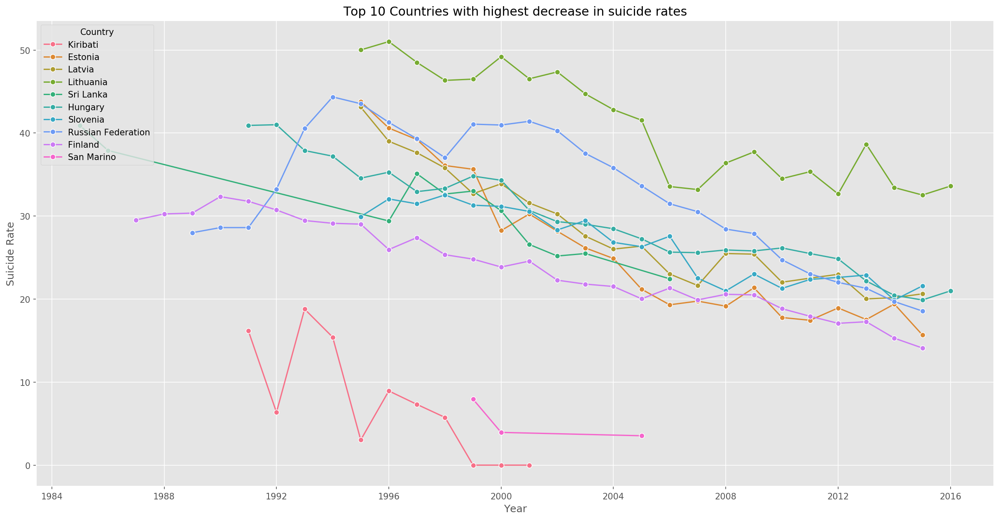
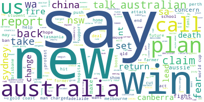

These are the personal and academic data science projects I have worked on.
I used languages like Python, Cassandra Query Language(CQL), SQL, R, MATLAB and a little bit of Java.
The projects range from Machine Learning for predictions, Artificial Neural Network for computer vision,
Information Retrieval, vertical search engines and data analysis.
I also have worked on visualisations and data cleaning prior to that.
The visualisations can be found on my Tableau public portfolio linked in the contacts.

Information Retrieval and Classification with Machine Learning
This is a project that focuses on buiding a vertical search engine for news articles from RSS feeds.
An automated crawler developed to crawl the features of the articles which went through text
preprocessing methods like indexing, lowercase transformation, lemmatisation, stop words and puntuation removal.
The crawled articles went through a rank retrieval process for the query processing part of the project.
Lastly, a news classifier was developed as a machine learning component of the project in order to tag the quried article by its category.
Technologies used include python, Jupyter Notebook, feedparser, nltk, pandas, numpy, genism, sklearn.
Check it out

Image Recognition with Deep Learning methods
This project aims at building an artificial neural network for fruit recognition.
The neural nertwork was trained on a dataset of fruits and the performances of the approcahes used was compared.
The approaches used were CNN and Transfer Learning.
Technologies used: Python, Jupyter Notebook, CNN, Transfer Learning, keras, numpy, pandas, sklearn, tensorflow, fastai, matplotlib.
Check it out

machine learning for suicide rate prediction based on socio-economic factors
This project was inspired by the state of low and middle income countries like the one I'm from; Ghana.
The aim was to study the patterns of the suicide rates of countries in the span of 30 years and draw conclusions based on
some of their socio-economic factors which could give an insight to the poverty level of the country.
The analysis studied the trends and behaviours of the suicide rates of the countries and
their the socio-economic factors; GDP per capita and GDP per year. Features were extracted to help
predict the suicide rates of the countries based on the factors.
The technologies used include Python, Jupyter Notebook, numpy, pandas, sklearn, seaborn, matplotlib, vecstack.
Models tested: Random forest, Bayesian Ridge Regression, Ridge Regression, XG Boost, Lasso Regression, Elastic Net Regression.
Check it out

Topic Modelling with LSA and LDA
In this project, I explored the behaviours of two algorithms for topic modelling.
This is Latent Dirichlet Allocation and Latent Semantic Analysis.
This is being performed on a dataset that gathers news article headlines from ABC News.
The goal is to figure out how each technique behaves and models topics from the same dataset.
The technologies used include, Python, Latent Dirichlet Allocation (LDA), Latent Semantic Analysis (LSA), numpy, pandas, matplotlib, scipy, sklearn, markovify.
Check It out

real estate price prediction
Prediction of estate prices based on the features of the houses and and location.
Check It out